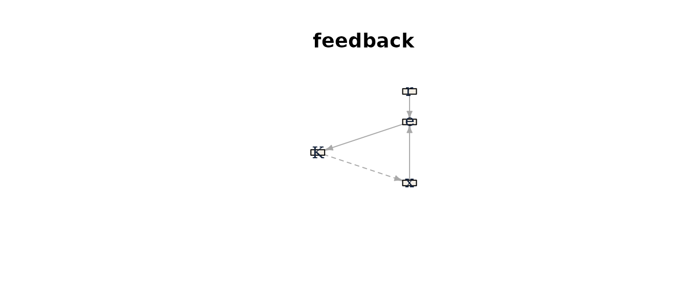

sim_compile() separates what the model is from
how it is executed. It turns a mutable sim_model
into an immutable sim_plan that can be run many times. This
vignette walks through the stages.
Stages
-
Flatten subsystems into leaf blocks named
instance/blockand resolvesim_param()references. - Build each block from its type and parameters. Invalid parameters fail here, with the block name in the message.
- Validate connections: blocks and ports exist, every input has exactly one source.
- Propagate sizes along connections and check compatibility.
- Build the direct-feedthrough graph: an edge A \to B exists when an output of A feeds an input of B on which B’s outputs depend at the same instant.
- Find strongly connected components (Tarjan’s algorithm). A component with more than one block, or a block that feeds itself, is an algebraic loop.
- Order the components topologically (Kahn’s algorithm).
- Lay out the signal, continuous state and discrete state vectors and collect sample times, zero crossings and events.
Direct feedthrough
A block has direct feedthrough on an input if its outputs at time t depend on that input at time t. Gains, sums and products do; integrators, unit delays, strictly proper transfer functions and state-space blocks with D = 0 do not. Only feedthrough connections become edges of the dependency graph.
m <- sim_model("feedback")
sim_add_block(m, "constant", "r")
sim_add_block(m, "subtract", "e")
sim_add_block(m, "gain", "K", gain = 3)
sim_add_block(m, "integrator", "x")
sim_connect(m, "r", "e", input = 1)
sim_connect(m, "x", "e", input = 2)
sim_connect(m, "e", "K")
sim_connect(m, "K", "x")
d <- sim_diagnostics(sim_compile(m))
d$edges
#> from to
#> 1 e K
#> 2 r e
#> 3 x e
d$order
#> [1] "r" "x" "e" "K"There is no edge into x: its input does not affect its
output at the same instant. The DOT export draws such connections
dashed:
cat(sim_to_dot(m))
#> digraph "feedback" {
#> rankdir=LR;
#> "r" [shape=box, label="r\n(constant)"];
#> "e" [shape=box, label="e\n(subtract)"];
#> "K" [shape=box, label="K\n(gain)"];
#> "x" [shape=box, label="x\n(integrator)"];
#> "r" -> "e" [label="1:1"];
#> "x" -> "e" [label="1:2"];
#> "e" -> "K" [label="1:1"];
#> "K" -> "x" [label="1:1", style=dashed];
#> }With ‘igraph’ installed, plot(m) draws the diagram.
plot(m)
Determinism and insertion order
Blocks are identified by name, and ties in the topological sort are broken by name. The execution order and the layout of the state vector therefore depend only on the graph, never on the order in which blocks or connections were added:
build <- function(order) {
m <- sim_model("shuffled")
adds <- list(
function() sim_add_block(m, "constant", "r"),
function() sim_add_block(m, "subtract", "e"),
function() sim_add_block(m, "integrator", "x"))
for (i in order) adds[[i]]()
sim_connect(m, "e", "x")
sim_connect(m, "x", "e", input = 2)
sim_connect(m, "r", "e", input = 1)
m
}
a <- sim_run(sim_compile(build(1:3)), c(0, 2))
b <- sim_run(sim_compile(build(c(3, 1, 2))), c(0, 2))
identical(a$signals, b$signals)
#> [1] TRUEThe same plan with the same parameters and solver settings always gives bit-for-bit identical results.
Plans are snapshots
Editing a model after compiling does not affect existing plans. Recompile to pick up changes.
plan <- sim_compile(m)
sim_set_block_params(m, "K", gain = 10)
sim_signal(sim_run(plan, c(0, 1), times = 1), "K") /
sim_signal(sim_run(plan, c(0, 1), times = 1), "e")
#> K
#> 3Parameter changes and recompilation
sim_set_params() rebuilds blocks with new model
parameters. When sizes, feedthrough, state dimensions, sample times and
connections are unchanged the graph analysis is reused
(structure_reused is TRUE). A parameter that
changes structure triggers a fresh analysis:
s <- sim_model("ss", params = list(D = 0))
sim_add_block(s, "constant", "u")
sim_add_block(s, "sum", "e", signs = "+-")
sim_add_block(s, "state_space", "G", A = -1, B = 1, C = 1, D = sim_param("D"))
sim_connect(s, "u", "e", input = 1)
sim_connect(s, "G", "e", input = 2)
sim_connect(s, "e", "G")
p0 <- sim_compile(s, algebraic_loops = "solve")
length(p0$graph$loops)
#> [1] 0
p1 <- sim_set_params(p0, D = 0.5)
c(reused = p1$structure_reused, loops = length(p1$graph$loops))
#> reused loops
#> 0 1With D \neq 0 the state-space block gains direct feedthrough and the feedback becomes an algebraic loop.
sim_param_values() shows the model parameters a plan was
built with, after sim_set_params():
sim_param_values(p1)
#> $D
#> [1] 0.5Diagnostics
sim_diagnostics() on a plan returns the order, the
loops, the dependency edges, the sample rates and notes about rate
transitions. On a result it returns the solver status and
statistics.